1. Dashboard — Consola Principal
Pantalla principal al iniciar la app (#/dashboard). Centro de control con KPIs, accesos rapidos y alertas en tiempo real.
js/views/dashboard-view.js · window.DashboardView1.1 KPIs Diarios Lacteos
Indicadores calculados sobre los ultimos 12 meses de entregas de leche (solo si flag LECHE = true):
- MOFA (Margen sobre Alimentacion) — Ingresos leche menos coste alimentacion
- Precio medio €/L — Media ponderada de ultimas entregas
- Extracto seco % — Grasa + Proteina media
- Celulas somaticas — Con semaforo (verde <200k, ambar 200-400k, rojo >400k)
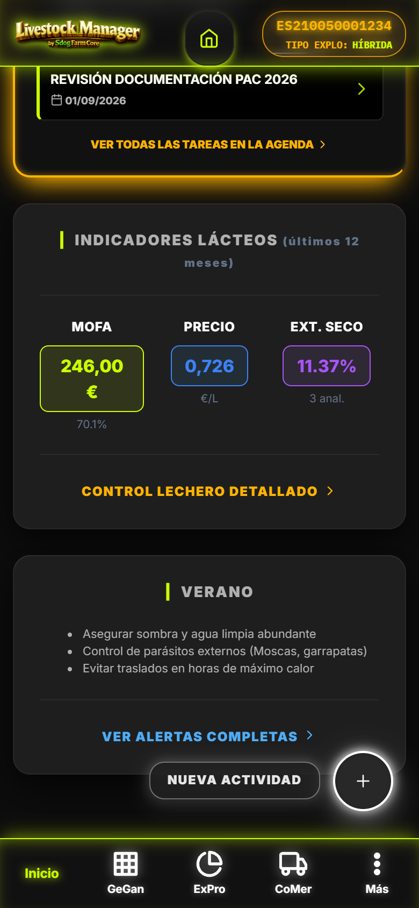
[CAPTURA] dashboard-kpis.png KPIs lacteos con progress bars semaforo1.2 Registro Rapido — Bento Grid 12 Accesos
Grid de 12 tarjetas (card-registro-quick) con colores semanticos por operacion:
| Operacion | Icono | Colores | Condicion |
|---|---|---|---|
| Peso (kg) | [PESO] | Naranja | Siempre (carne) |
| Ordeño (L) | [LECHE] | Azul | Flag LECHE |
| Entrega Tanque | [TANQUE] | Azul | Flag LECHE |
| Albaran Leche | [ALBARAN] | Azul | Flag LECHE |
| Tratamiento | [MEDIC] | Rojo | Siempre |
| Vacunacion | [VACUNA] | Rojo | Siempre |
| Celo / IA | [REPRO] | Rosa | Siempre |
| Parto | [PARTO] | Rosa | Siempre |
| Gasto | [GASTO] | Gris | Siempre |
| Censo Anual | [CENSO] | Verde | Siempre |
| Crotales | [CROTAL] | Verde | Siempre |
| Guia Movimiento | [GUIA] | Verde | Siempre |
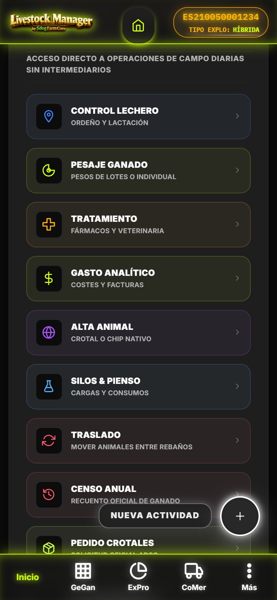
[CAPTURA] dashboard-bento-grid.png Bento Grid 12 tarjetas con skeleton loaders1.3 Alertas en Tiempo Real
Sistema de badges con contadores y codigo de color:
- Rojo (urgente): Supresion sanitaria activa (dias restantes ≤ 0)
- Ambar (advertencia): Supresion proxima (1-7 dias), vencimientos PAC/contratos/ADSG
- Verde (OK): Sin alertas criticas
Suscripcion a EventBus para actualizacion en vivo al registrar tratamientos, vencimientos, etc.
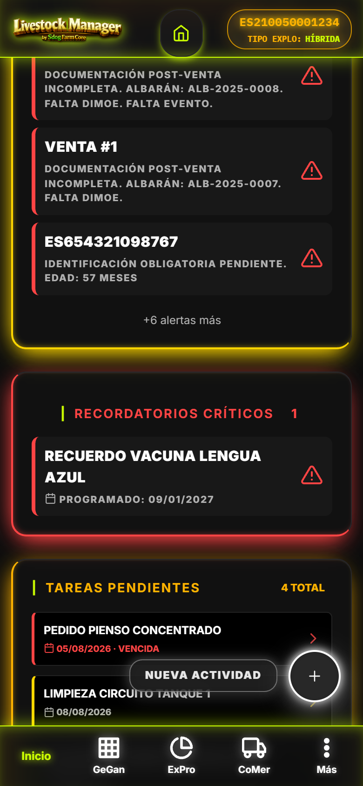
[CAPTURA] dashboard-alertas.png Alertas con badges y contadores en tiempo real1.4 FAB "Nueva Actividad"
Boton flotante (FAB) contenedor con label "Nueva Actividad" que abre menu rapido de los mismos 12 registros del Bento Grid.
1.5 Widget Tareas Pendientes (Agenda)
Muestra proximas citas de AgendaView integradas en el dashboard (recordatorios sanitarios, revisiones, tramites).
PremiumManager.isFree()). KPIs lacteos solo se calculan si hay entregas de leche y flag LECHE activo.
2. Hub Ganadería (GeGan) — Carrusel 5 Submodulos
Consola unificada #/ganaderia con carrusel horizontal sticky de 5 submodulos. Header maestro colour verde lima (--c-success).
js/views/ganaderia-view.js · window.GanaderiaView2.1 Carrusel de Submodulos (Sticky)
Implementado con App.renderCarruselPestanas (z-index 900, overflow: clip, wrapper mb-14). Persiste submodulo activo en _activeSubModule con auto-fallback si el actual deja de estar permitido por flags.
| Submodulo | Color | Ruta | Vista Delegada | Condicion |
|---|---|---|---|---|
| Animales | Naranja | #/ganaderia?sub=animales | AnimalesView | Siempre |
| Rebaños | Azul | #/ganaderia?sub=rebanos | RebanosView | Siempre |
| Patrimonio | Ambar | #/ganaderia?sub=patrimonio | PatrimonioView | Solo Flag CARNE |
| Zonas | Verde | #/ganaderia?sub=zonas | ZonasView | Siempre |
| Sanidad | Purpura | #/ganaderia?sub=sanidad | SanidadView | Siempre |
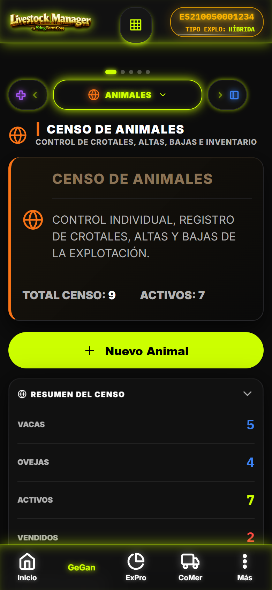
[CAPTURA] ganaderia-carrusel.png Carrusel sticky con 5 submodulos, header verde lima GeGan2.2 Widget Agenda Integrado
En #ganaderia-agenda-widget se renderiza AgendaView.renderWidget() con proximas citas contextuales al submodulo activo.
ModoContextoHelper.flags.carne === true para la finca activa. No es limitacion Premium, es modo de explotacion.
3. Animales — Lista, Ficha y Wizard de Alta
Gestion completa del censo: listado con filtros, ficha detalle full-screen, wizard 10+ secciones, validacion REGA en tiempo real.
js/views/animales-view.js · window.AnimalesView · Rutas: #/animales, #/animal, #/animal?id={id}3.1 Listado Inteligente
- Busqueda integrada: Por crotal, nombre, raza, rebaño
- Filtro especie: Select dinamico (Vacuno, Ovino, Caprino, Porcino, Equino...)
- Cards estandar (
App._cardRegistro): Badge estado (Activo=verde, Vendido=ambar, Baja=rojo vineta retroiluminada), enlace "Ficha →" badge amarillo poco prominente - Banner "ocultos por modo": Si hay animales filtrados por flags leche/carne
- Module header: Resumen censal (total, activos, vendidos)
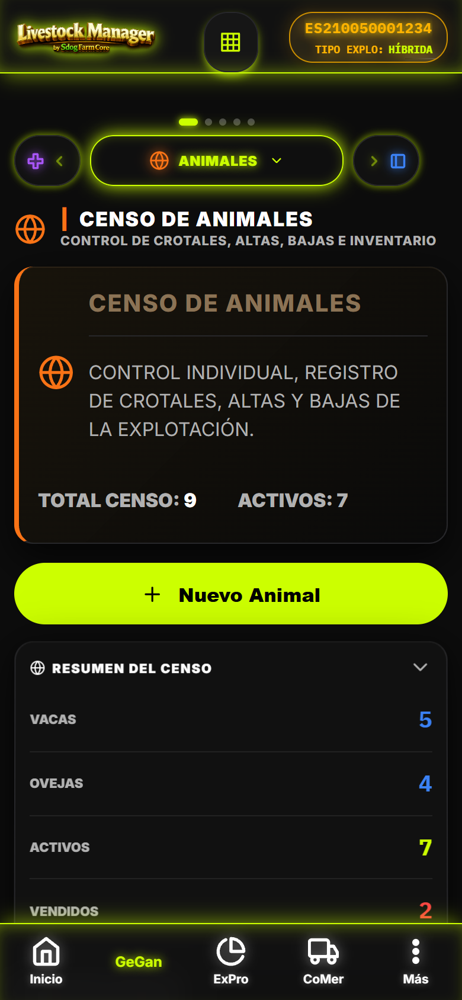
[CAPTURA] animales-lista.png Listado con busqueda, filtro especie, cards con badge estado y enlace Ficha3.2 Ficha Animal / Wizard Alta (Full-Screen)
Wizard a pantalla completa con header fijo (NFC/SCAN), footer fijo (Guardar/Salir/Eliminar), 10+ secciones colapsables:
- Identificacion: Crotal (validacion ES+12 digitos tiempo real, color codigo), RFID, DIB/Pasaporte, Tipo identificacion (Completa vs Matadero)
- Datos basicos: Nombre, Sexo (H/M/C), Fecha nacimiento, Especie, Raza (catalogo FEGA 163 razas DB v16), Categoria productiva
- Rebaño y Zona: Asignacion a rebaño/lote y zona actual
- Origen / Tipo de Alta: Nacimiento, Compra, Importacion... (oficiales desde
ComunidadesService) - Compra (si aplica): Precio, Proveedor, Factura, Pago pendiente, Fecha
- Madre: Vinculacion madre-cria (selector hembras activas)
- Libro Registro SIGGAN: Pais nacimiento, REGA procedencia, Fecha alta/baja, Motivo baja oficial
- Notificacion REGA/SIA: Checkbox
notificado_regacon validacion y envio real - Estado actual: Activo / Vendido / Baja (muerte/sacrificio) con motivo y fecha
- SANDACH automatico: Al seleccionar motivo de baja
- Margen economico: Calculo
MargenAnimal.calcular(animalId)(coste total, ingreso total, margen neto, desglose compra/sanidad/leche/venta) - Historial reproductivo y companeros de lote (solo en edicion)
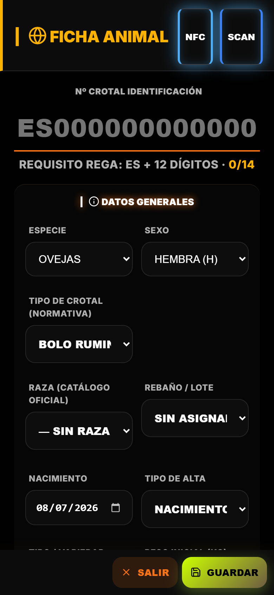
[CAPTURA] animales-ficha-wizard.png Wizard full-screen con 10+ secciones, validacion crotal dorada/roja3.3 Validacion Crotal en Tiempo Real
Formato ES + 12 digitos (SITRAN). Input con color dorado si valido, rojo si invalido. Validacion pais nacimiento y REGA procedencia.
3.4 Catalogo Razas FEGA Oficial
163 razas (DB v16) filtradas por especie con clasificacion 1001-1004 y grado de amenaza. Select dinamico que se actualiza al cambiar especie.
4. Rebaños — Lotes, KPIs y Historial
Gestion de lotes/rebaños con KPIs productivos, historial sanitario, gastos combinados y wizard 5 pasos.
js/views/rebanos-view.js · window.RebanosView · Rutas: #/rebanos, #/rebano?id={id}4.1 Listado y KPIs
- Busqueda: Por nombre, raza, codigo lote
- Grafico evolucion mensual: Ultimos 6 meses (pesajes, ordeños, eventos)
- Card-resumen balance: Categorias carne, leche, activos, total
- Cards estandar: Badge estado (Activo/Inactivo/Vendido), enlace "Ficha →"
4.2 Detalle de Rebaño
- Info-boxes KPIs (3 columnas): Total, Activos, Vendidos, kg carne, Litros leche, Eventos
- Historial sanitario: Tratamientos, retiradas, veterinario prescriptor, tiempos espera carne/leche
- Gastos combinados: Gastos manuales + consumo silos (registro_eventos tipo
silo_consumo) - Animales del rebaño: Lista con ficha rapida y boton "Mover Lote"
- Botones widget-link-btn neon: Tratamiento, Consumo, Gasto, Mover
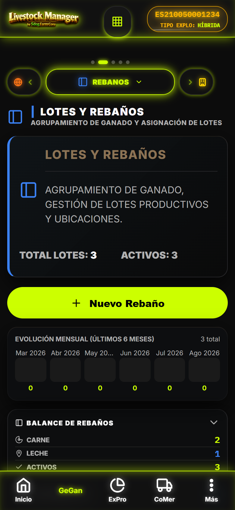
[CAPTURA] rebanos-detalle.png Detalle con KPIs, historial sanitario, botones accion neon4.3 Wizard Nuevo Rebaño (5 Pasos)
- Datos basicos: Nombre, especie, tipo (leche/carne/mixta), capacidad, codigo lote, fecha constitucion
- Ubicacion: Zona, tipo explotacion REGA (RD 787/2023 — select obligatorio)
- Produccion: Tipos filtrados por flags modo finca
- Validaciones: Capacidad > 0, tipo explotacion requerido
- Confirmacion: Resumen y guardado
Eliminacion con auditoria (solo si sin animales activos), wizard steps tematicos colores ambar/verde/azul/oro.
4.4 Integracion SIGGAN
- Tipo explotacion REGA obligatorio (clasificacion RD 787/2023)
- Codigo lote para trazabilidad
- Consumo pienso integrado con Silos (descuenta stock, genera gasto analitico)
- Historial sanitario con tiempos espera diferenciados carne/leche
5. Zonas — Parcelas, UGM y Rotacion de Pastos
Gestion de parcelas con aforo, superficie, UGM, carga ganadera, control fitosanitario y rotacion validada.
js/views/zonas-view.js · window.ZonasView · Rutas: #/zonas, #/zona?index={index}5.1 Calculo UGM Automatico
| Especie | UGM |
|---|---|
| Vacas / Bovino | 1.0 |
| Ovejas / Cabras | 0.15 |
| Cerdos | 0.3 |
| Equino | 1.1 |
Formula: UGM_total = Σ(animales_especie × UGM_especie) → Carga UGM/ha = UGM_total / superficie_ha
5.2 Alertas Sobrepastoreo
- Limite ecologico: 1.0 UGM/ha (pastoreo extensivo)
- Alerta Bento critica (rojo, animada): Si carga > 100% → lista parcelas afectadas con UGM/ha
- Estados ocupacion: Sobrecarga (>100%), Optimo (80-100%), Aceptable (50-80%), Infrautilizada (<50%)
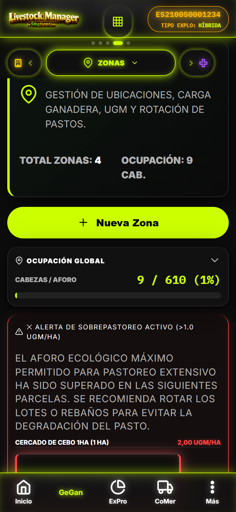
[CAPTURA] zonas-sobrepastoreo.png Alerta Bento sobrepastoreo con progress bars carga/aforo5.3 Control Fitosanitario y Rotacion
- Bloquea rotacion si parcela en cuarentena (lee gastos categoria 'fitosanitarios' con
control_normativo.plazoSeguridadDias) - Modal rotacion: selector rebaño origen, parcela destino (con estado fitosanitario), observaciones
- Registra evento
registro_eventostipo 'traslado' motivo 'rotacion_pastos' para auditoria
5.4 Datos SIGGAN / PAC
- Codigo PAC: Parcela agraria (obligatorio para subvenciones CCAA)
- Distancia a agua: Requisito PAC/bienestar
- Zona guarda
zonaActual(nombre) yzonaId(FK) para censo por zona
5.5 Demo CHAMORRO — Auto-Prueba Sobrepastoreo
Si finca.nombre incluye 'CHAMORRO' o flag demo: auto-crea 'Cercado de Cebo 1ha' (1 ha, aforo 10) y mueve rebaño 'Terneros Cebo' → dispara sobrepastoreo (2.0 UGM/ha > 1.0). Permite probar alerta y rotacion preventiva.
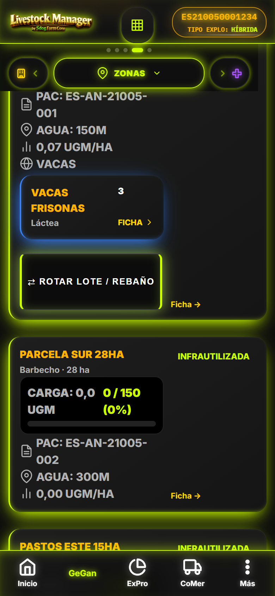
[CAPTURA] zonas-demo-chamorro.png Zona demo con sobrepastoreo 2.0 UGM/ha y boton rotar5.6 Wizard Nueva Zona (2 Pasos)
- Datos basicos: Nombre, superficie (ha), aforo maximo, UGM/ha calculado
- PAC/Agua: Codigo PAC, distancia a agua (m)
6. Wizards: Declaracion Censal, Crotales y Finca
Tres wizards principales accesibles desde Dashboard (Bento Grid) y Ganadería.
6.1 Wizard Declaracion Censal (wizard-censo.js)
Titulo: DECLARACION CENSAL — 3 pasos
- Fecha Referencia: Date (default 1 enero año actual) — obligatorio. Nota: declaracion censal se refiere a censo a 1 de enero.
- Censo Consolidado: Calculo automatico por especie y categoria (solo lectura). Total cabezas activas, desglose hembras/machos/categoria. Debe haber ≥1 animal activo.
- Tramitacion Administrativa: Estado (borrador/presentado/aceptado/rechazado), fecha presentacion, º registro oficial, acuse recibo. Validacion: fecha y º requeridos si no borrador.
Al completar: Guarda en documentos_legales (tipo DECLARACION_CENSAL), registra evento declaracion_censal, genera PDF con firma titular, REGA, desglose por especie. Compartir/Imprimir via DocumentViewer + Share API.
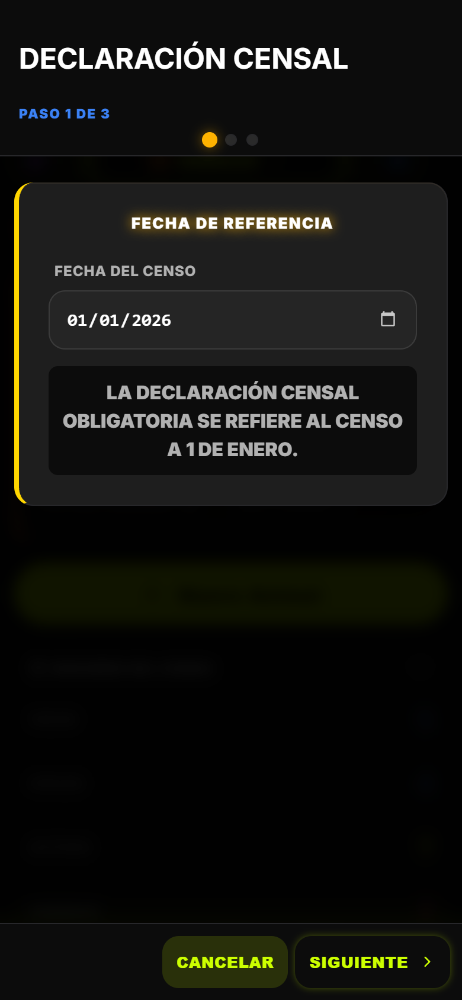
[CAPTURA] wizard-censo-paso1.png Paso 1: Fecha referencia + censo consolidado automatico6.2 Wizard Pedido Oficial Crotales (wizard-crotales.js)
Titulo: PEDIDO OFICIAL CROTALES — 2 pasos
- Material Solicitado: Especie (autorizables por CCAA), Tipo (Bandera+Boton EID, Boton+Boton EID, Bolo Ruminal+Boton Visual, Crotal Visual Clasico), Cantidad (pares, min 1). Nota: EID obligatorio nuevas incorporaciones RD 787/2023.
- Destino y ADSG: Selector ADSG registrada (autocompleta), Nombre ADSG (obligatorio), Codigo ADSG, Veterinario, Colegiado, NIF. Muestra destino SIGGAN (Andalucia) o BADIGEX (Extremadura) segun CCAA finca. Valida REGA finca.
Al completar: Guarda en pedidos_crotales (estado pendiente), genera PDF solicitud oficial: datos titular, explotacion, REGA, ADSG, material. DocumentViewer con compartir/imprimir.
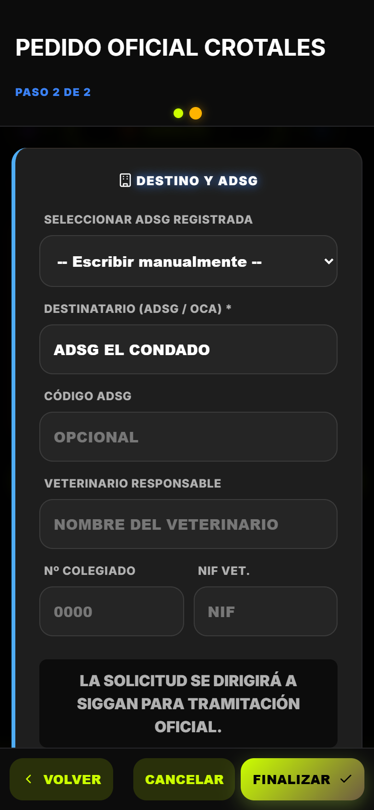
[CAPTURA] wizard-crotales-paso2.png Paso 2: Destino ADSG con autocompletado y validacion REGA6.3 Wizard Finca (wizard-finca.js)
Dos modos: Nueva Finca (1 paso) y Editar Finca Activa (3 pasos).
Nueva Finca
- Nombre, Propietario, Codigo REGA (input-rega-std max 14), CCAA, Superficie total, Coordenadas
- Especies autorizadas (checkboxes multiple), Flag LECHE (default true), Flag CARNE (default false)
- Validacion: nombre y propietario obligatorios, al menos un flag activo
Editar Finca Activa (3 Pasos)
- Datos Generales + ADSG: Nombre, propietario, REGA, CEA, NIF/CIF, telefono, direccion, capacidad max, CCAA, tipo explotacion SIGGAN/BADIGEX, sistema explotacion, flags leche/carne, calificacion sanitaria, Guia 365, especies autorizadas, Explotacion Lidia (checkbox, etiqueta SIGGAN Bovino Filiaciones), ADSG completa (nombre, codigo, veterinario, colegiado, telefono, NIF, vencimiento, email)
- Contrato Lacteo INFOLAC: Nº contrato, fecha fin, comprador, Nº INFOLAC. Aviso si tipo explotacion leche/mixto: contrato obligatorio 1 ano minimo.
- Instalaciones Lacteas Letra Q: Solo si flag LECHE. Codigo Letra Q (formato T-PP-NNNNN), Clasificacion zootecnica compatible Letra Q, Plazas vacuno leche, Nº cubiculos, Superficie descanso m2, Metros lineales comedero. Si >300 plazas: capacidad balsa purines m3, evaluacion ambiental.
Al completar: Fincas.save() + App.updateNavigationMenu() + App.renderAjustes()
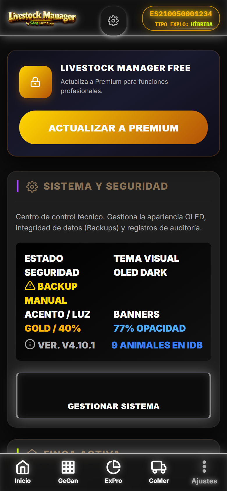
[CAPTURA] wizard-finca-paso3.png Paso 3: Instalaciones lacteas Letra Q con validaciones condicionales7. Integracion SIGGAN (Andalucia) / BADIGEX (Extremadura)
Cumplimiento normativo 100% implementado (7/7 gaps + Lidia + saneamientos granular — PR #66).
7.1 Crotal e Identificacion
- Formato ES + 12 digitos (SITRAN) con validacion pais nacimiento
- Catalogo razas FEGA oficial (163 razas, DB v16, clasificacion 1001-1004 + grado amenaza)
- Tipos identificador por especie (RD 787/2023) — excluye dados de baja
- Libro registro: REGA procedencia, pais nacimiento, madre, DIB/Pasaporte, fecha alta/baja
7.2 Tipos de Explotacion y Alta
- Tipos explotacion REGA obligatorios en wizard rebaño y finca
- Tipos de alta oficiales (Nacimiento, Compra, Importacion...) desde
ComunidadesService - Categorias animal por especie (libro registro SIGGAN)
- Motivos de baja oficiales + clasificacion SANDACH automatica
7.3 Notificaciones REGA/SIA/PIGGAN
- Checkbox
notificado_regaen ficha animal con validacion previa - Envio real via
NotificacionesREGAservice (Gap 11 implementado) - Destino: CEBO/ENGORDE derivado de
Movimientos.esDestinoCebo() - Tipo identificacion: Completa (EID+Visual) vs Matadero (Visual REGA)
7.4 Declaracion Censal y Crotales
- Documento oficial SIGGAN (Junta Andalucia) con REGA, NIF/CIF titular, provincia/municipio
- Formato tabla: Especie | Hembras | Machos | Total
- Pedido crotales: delegacion ADSG/OCA, plataforma destino SIGGAN/BADIGEX/SIA/PIGGAN
- Especies autorizadas por CCAA (
ComunidadesService)
7.5 Finca: Paquete Lacteo Completo
- REGA validado por CCAA (
ComunidadesService.validarFormatoREGA) - Tipo explotacion SIGGAN/BADIGEX segun CCAA
- Contrato lacteo obligatorio 1 ano minimo (tipo leche/mixto)
- Letra Q: Codigo oficial Registro General Agentes Sector Lacteo (MAPA) formato T-PP-NNNNN
- Clasificacion zootecnica solo compatibles Letra Q
- Explotacion Lidia: etiqueta SIGGAN (Bovino > Filiaciones)
- Guia 365 dias (saneada) — autorizacion sanitaria
8. Datos Demo CHAMORRO — Replicar Capturas
Cargar la demo desde Ajustes → Asistente Configuracion → Cargar Demo CHAMORRO
8.1 Que Incluye la Demo
8.2 Validacion Guas PWA (2026-08-04)
| Modulo | Guias Validadas | Total |
|---|---|---|
| GeGan (Ganadería) | 36/38 | 38 |
| CoMer (Comercializacion) | 40/42 | 42 |
| ExPro (Produccion) | 52/55 | 55 |
[NOTA] Spec completa en Private/VALIDACION-GUIAS-DEMO-CHAMORRO.md. Diferencia 1 target por datos demo vs Android nativo.